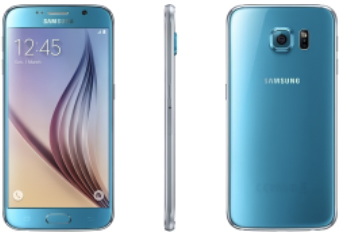

Park Gyeol
/ student
자기소개
취미
활동
SNS
GALAXY S3
GALAXY S4
GALAXY S5
GALAXY S6
GALAXY S7
GALAXY S8
GALAXY S9
GALAXY S10
GALAXY S20
GALAXY S21
GALAXY S6
 기존에 갤럭시는 안 예쁘고 아이폰은 예쁘다는 이미지를 박살 낸 시리즈라고 생각합니다.
이전에는 디자인적으로 아이폰이 더 좋은 평가를 받는 경우가 많았지만 갤럭시 S6 이후에는 갤럭시도 예쁘다는 평가를 자주 듣고 있습니다.
사양도 드디어 S 시리즈에 3GB 램이 탑재되었으며 엑시노스 7420, 5.1인치의 QHD 디스플레이, 최대 128GB 메모리를 탑재하여 플레그십에 걸맞은 사양을 가졌었습니다.
카메라 또한 갤럭시 S 시리즈 중 최초로 OIS가 탑재되어 손떨림 방지가 획기적으로 좋아졌습니다.
기능적으로는 기존에 인식률이 낮아서 있다에 의미를 두던 지문인식 센서가 스와이프 형식에서 에어리어 형식으로
변경돼서 훨씬 편리해졌고 지문인식 기술이 있어 쉽고 훨씬 강력해진 보안을 이용할 수 있는 삼성페이가 탑재되었습니다.
삼성 페이는 출시되기 전엔 지원하는 곳들이 적으면 오히려 불편할 수 있다는 문제점을 비웃기라도 하듯 출시부터 거의 대부분의 가게에는 사용이 가능했고
현재까지 국내에서 삼성페이를 따라오는 간편결제 서비스가 없을 정도로 완벽한 모습을 보여주었습니다.
디자인은 후면 유리에 평광필름을 사용해서 완벽한 디자인을 보여주었고
색상 또한 평광 필름의 반짝거림을 너무 튀지 않게 해주는 색으로 갤럭시 시리즈 중 역대급 색상으로 기억되고 있습니다.
단점으로는 후면을 유리로 바꾸면서 배터리 교체가 안되다는 점이 있었습니다.
하지만 이를 디자인이 전부 커버를 할 정도로 디자인을 잘 뽑았기 때문에 그것으로 커버를 하면 충분히 커버할 수 있다고 생각합니다.
갤럭시 S6를 홍보하기 위해서는 정말 많은 부분을 찾을 수 있습니다.
디자인을 따지던 안 따지던 완벽한 디자인, 사용성이 좋아진 지문인식 센서, 삼성의 역대급 기능인 삼성페이 카메라를 자주 사용하면 OIS 등등 엄청나게 많은 포인트를 가지고 있었습니다.